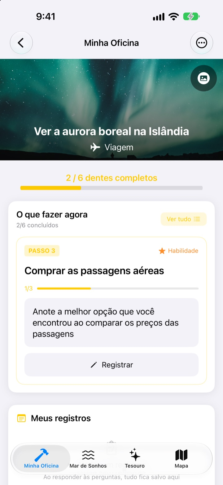
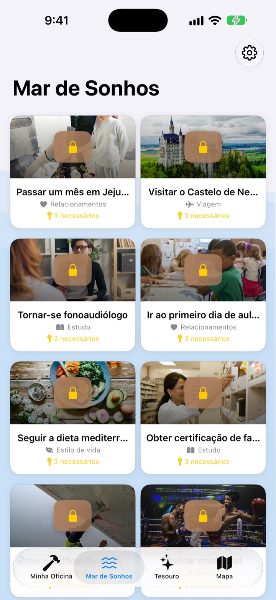
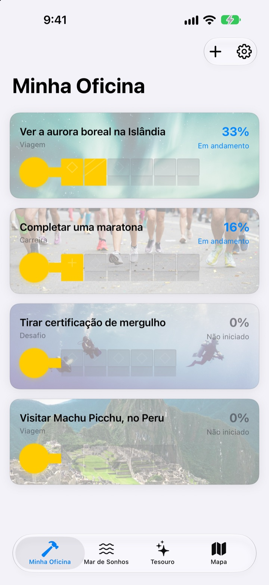
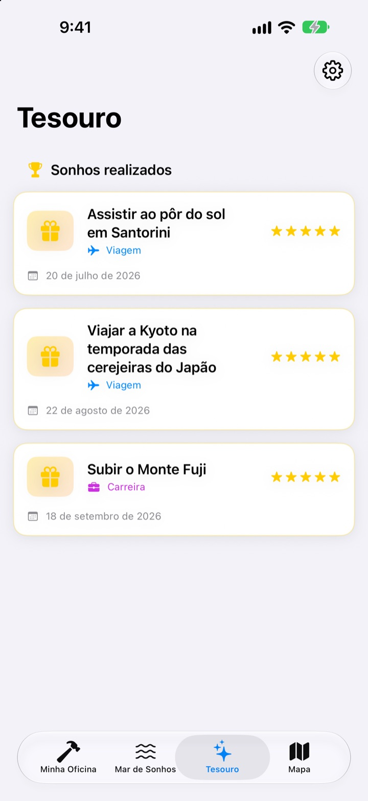

Não deixe seus sonhos
só no papel
Escolha um sonho e os pequenos passos até ele viram os dentes de uma chave. Responda ao passo de hoje, uma pergunta de cada vez, e quando você perceber a caixa já está aberta.
Compre uma vez e use todos os recursos. Sem assinatura, sem anúncios.

Complete a chave
Faltam dois passos no sonho da aurora boreal. Responda cada pergunta em uma linha (ou deixe em branco) e toque em Próximo. Cada passo concluído preenche um dente, e a chave completa abre a caixa.
Já escreveu uma lista de sonhos e esqueceu dela?
“Ver a aurora boreal” é tão grande que você não sabe por onde começar, e fica na lista por anos. O Dream Seeker divide o sonho em passos que dá para fazer hoje, como pesquisar a temporada, juntar dinheiro e comprar as passagens, e mostra só o que é para agora.
Mais de 590 sonhos para escolher
Viagens, experiências, conquistas, saúde, aprendizado e relacionamentos. Sonhos de seis áreas flutuam em caixas no Mar de Sonhos. Leve um para a sua oficina e os passos já estão separados.
Não achou o seu? Crie com um título, uma área e os passos necessários.

Um dente por vez, só o que dá para hoje
A Minha Oficina mostra quanto a chave de cada sonho já avançou. O passo da vez fica no topo, e responder às perguntas dele preenche um dente.
Respostas e fotos ficam em Meus registros, e a Linha do tempo do progresso mostra todo o caminho percorrido.

Sonhos realizados no Tesouro, lugares no mapa
Preencha todos os dentes e abra a caixa. Os sonhos realizados ficam no Tesouro com a data, e os sonhos em pausa esperam lá até você retomar.
Sonhos ligados a um lugar aparecem no mapa, para você ver todos os lugares aonde quer ir.

Comece em três passos
- 1
Escolha um sonho
Toque em uma caixa no Mar de Sonhos e escolha Levar para a oficina.
- 2
Responda ao passo de hoje
Responda uma a uma as perguntas do passo no topo para preencher um dente.
- 3
Abra a caixa
Com todos os dentes preenchidos, a chave fica pronta e a caixa se abre.
Seis áreas no Mar de Sonhos
- Viagem
- Ver a aurora boreal na Islândia · Assistir ao pôr do sol em Santorini
- Experiência
- Saltar de paraquedas · Voar de parapente
- Conquista
- Completar uma maratona · Fazer a trilha até o Campo Base do Everest
- Saúde
- Fazer 20 barras fixas · Definir o abdômen
- Aprendizado
- Falar inglês fluentemente · Falar francês fluentemente
- Relacionamentos
- Viajar o mundo com os pais · Passar um mês em Jeju com os amigos
Cada área tem quase cem sonhos. Crie os seus com Adicionar novo sonho na Minha Oficina.
Uma compra, tudo incluído
O app
- Mais de 590 sonhos com perguntas em cada passo
- Seus próprios sonhos
- Meus registros com fotos e a Linha do tempo do progresso
- Tesouro e mapa
- Modo Cultivar Sonhos
- As próximas atualizações
Apoie o desenvolvedor (opcional)
- Se o app ajudar, você pode mandar uma pequena gorjeta pelos Ajustes
- A gorjeta não libera nada. Sem ela, todos os recursos continuam seus
Gorjetas avulsas, não uma assinatura.
Nada dentro do app é pago à parte. Sem conta, sem anúncios.
Perguntas frequentes
Como eu começo?
Na aba Mar de Sonhos, toque em uma caixa de que goste e escolha Levar para a oficina. Na Minha Oficina, responda às perguntas do passo atual e os dentes vão sendo preenchidos. Com todos completos, você abre a caixa.
Posso adicionar um sonho meu?
Pode. Na Minha Oficina, toque em Adicionar novo sonho e informe um título, uma área e os passos para chegar lá.
Como pauso um sonho ou retomo?
No menu de um sonho em andamento, escolha Desistir deste sonho e ele vai para Sonhos em pausa, no Tesouro. Lá, toque em Retomar para trazê-lo de volta à oficina, ou em Excluir de vez para apagá-lo.
O que é o Modo Cultivar Sonhos?
Uma tela que organiza seus sonhos como a subida de uma montanha. Ative ou desative em Ajustes > Exibição. Dá para acompanhar prazos por passo e obstáculos como custo e tempo, como num projeto.
As fotos não aparecem.
Algumas imagens de fundo são baixadas da internet. Verifique se você está conectado. Sem conexão, aparece uma imagem padrão.
Posso levar meus registros para um iPhone novo?
Seus registros ficam só neste aparelho, sem conta nem sincronização. Ao restaurar um iPhone novo a partir de um backup do iCloud ou do computador, eles vão junto com os dados dos outros apps.
Tem compras dentro do app?
Não. Com o app, todos os recursos são seus. As gorjetas nos Ajustes existem só se você quiser agradecer.
Meus sonhos e registros são enviados para algum lugar?
Não. Não há conta, anúncios nem ferramentas de análise. Sonhos, registros e fotos ficam no seu aparelho.
Como falo com vocês?
Bugs, ideias ou qualquer outra coisa: envie em Enviar feedback, nos Ajustes do app, ou por DM no Instagram (@lee25_ios).
Dúvidas ou problemas? Escreva para leeo@kakao.com.